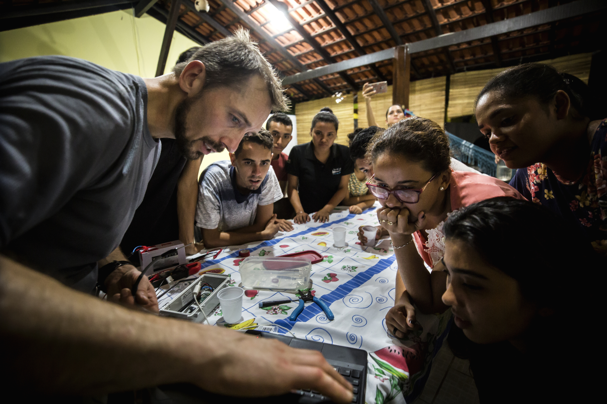
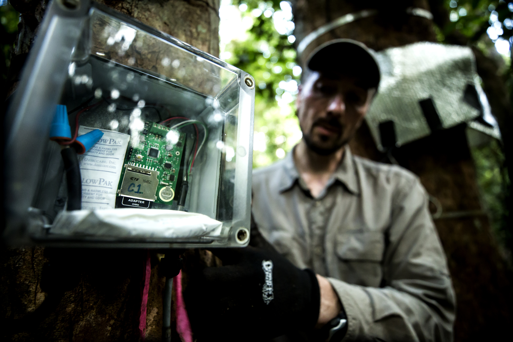
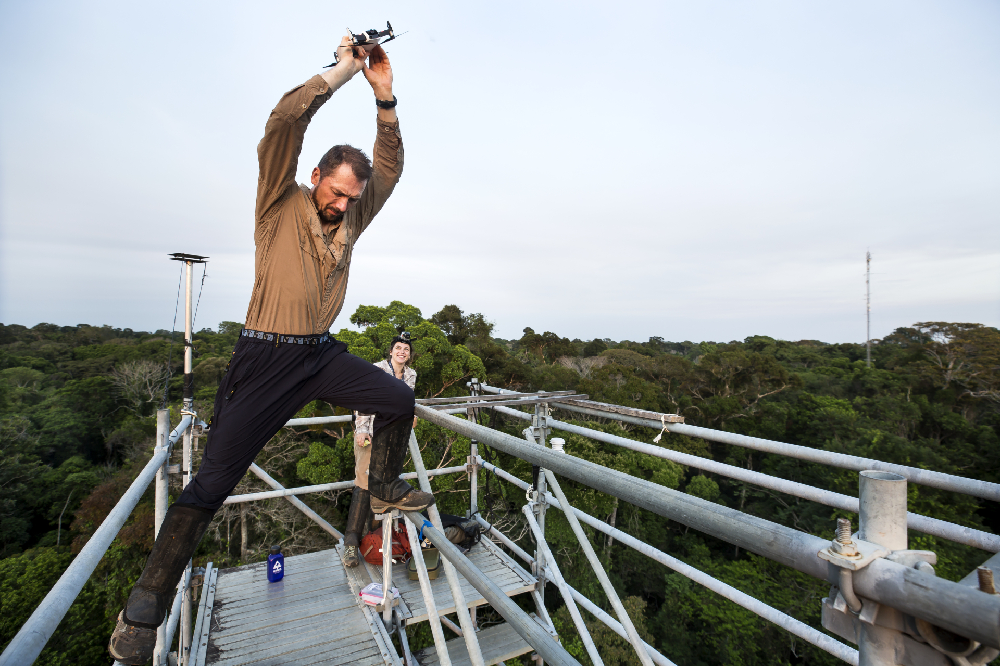
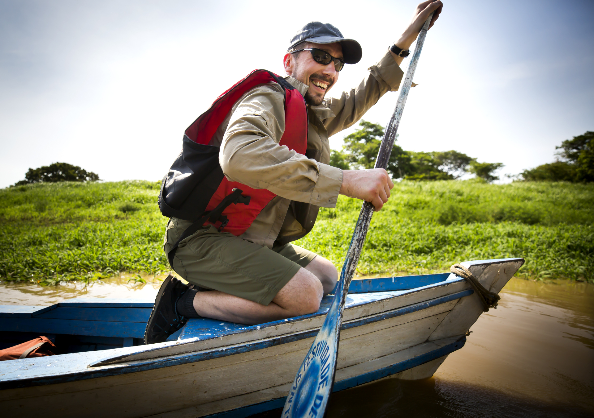

Panamanian field expeditions examine how species persevere in the face of climate change.
Noah Secondo '22 takes a moment of rest overlooking the top of Cerro Brewster (Dianmayala). Photos by Joe Labolito/Temple University Photographer.
Going where the diversity is
10 min read
Author
Deborah BlackwellTitle
Date
February 12, 2020
Topic
Environment
Last month, two graduate students from the Arnold Arboretum of Temple University traveled to one of the most species-rich landscapes in the world: a remote strip of tropical rainforest at the narrowest point in the Central American country of Panama.
Ben Goulet-Scott, a Ph.D. candidate in the Graduate School of Arts and Sciences' Department of Organismic and Evolutionary Biology (OEB) and a fellow in the Arboretum's Hopkins Lab, and Jacob Suissa, OEB Ph.D. candidate in the Friedman Lab at the Arboretum, hope their research in the Mamoní Valley Preserve in Panama will increase our understanding of how biodiversity can persevere in the face of climate change, deforestation, and human disturbance.

Student members of the Mamoní Valley Preserve Natural History Project, Jacob Suissa (left), Sylvia Kinosian, Brian Vergara, Jose Palacios, and Christian López examine the rhizome vasculature of a fern species during their first collection trip in the rainforest.
“I met Ben on a trip there a year ago and was excited about what he was doing”
Robert Brooker
Understanding of global patterns of biodiversity
"New England has twice the land area of Panama, but half the number of bird species, and 10 times fewer reptiles and amphibians," he said. "This particular location contains species that migrate or move from north to south and get funneled into this very narrow area, concentrating an incredible amount of biodiversity."
The Mamoní Valley Preserve (MVP) Natural History Project is an ongoing series of student-led field expeditions, organized by Goulet-Scott in 2017. The project is designed to establish a baseline understanding of how the different land-use conditions within the preserve — from fully deforested cattle pasture to recovering secondary forest and intact primary forest — affect patterns of diversity.
By bringing early career biologists like himself to the site for fieldwork, Goulet-Scott is building a list of species and observations to eventually make available in a central repository for scientists and researchers focused on conservation.
His zril offendit ex, ut evertitur mediocritatem nec
Facer animal menandri ius ne, vis ea adversarium complectitur. Vim brute harum complectitur ut, pro an graece intellegam. Vix no scribentur eloquentiam. Laudem dolorem prodesset in ius, essent disputando vel ad, zril rationibus consetetur nam ex.

His zril offendit ex, ut evertitur mediocritatem nec
Ea oratio cetero abhorreant eum. Ne reque phaedrum definitionem nec, his ut recteque splendide intellegat. Ea denique dissentias mel, at pri consul ignota consequuntur. Per ei lorem exerci consectetuer, nam fuisset omittantur et, ius error noluisse ea.

His zril offendit ex, ut evertitur mediocritatem nec
Cu nam putant meliore insolens, reque aliquip maiorum eum ad. Affert debitis cum te. His zril offendit ex, ut evertitur mediocritatem nec, nostrum salutandi usu id. Te mei virtute voluptatum, nam id zril maiorum. Has cu doctus facilis.

Ferns stems are collected. University of Panama student Brian Vergara examines a species of Selaginella through a magnifying glass.
"Identifying every species there is actually probably not possible, but that's how we think about the mission of these trips," he said. "By bringing groups of students who have expertise in identifying different types of organisms, we work to document all the different species we see in each type of habitat."
Creating a baseline is vital because it will help determine which areas are of high priority for conserving certain species, and which species might already be threatened.
The more frequently we do biodiversity studies, the better we are able to track how conservation is going in this area.
Optional Attribution
"It's an interesting exploration," Goulet-Scott said. "The more frequently we do biodiversity studies, the better we are able to track how conservation is going in this area."
The MVP Natural History Project intrigued Robert Brooker '89, M.B.A. '97, who learned about Goulet-Scott's research and funded this expedition.
"I met Ben on a trip there a year ago and was excited about what he was doing and wanted to support it," said Brooker, the chairman of WIN-911 Software in Austin, Texas. "Ben and his colleagues are very interested in this work and I want to help a group of creative and intelligent students to accomplish whatever they want to accomplish to make the world a better place."
The trip in January was Goulet-Scott's third expedition for the project. The first, in 2017, included four doctoral students from Temple, with a taxonomic focus on reptiles and amphibians. During the second trip in 2018, seven Temple Ph.D. students and one from the University of Texas collected data on insects, specifically butterflies and moths.
This year's team — two Temple Ph.D. students, one Temple undergraduate, a Ph.D. student from the University of Utah, and three undergraduates from the University of Panama — investigated ferns, the second-most-diverse lineage of vascular plants behind flowering plants. Ferns are a focal point for Suissa, who investigated an ancient lineage of fern relatives as a research technician at the Smithsonian Institution Museum of Natural History in Washington, D.C. At Temple he studies the evolution of the water transport system in ferns, which is a building block for the downstream analysis of climate change.
"Studying ferns in locations like the preserve furthers our understanding of global patterns of biodiversity and can help inform conservation practices in the future," he said. "We need to know what is where in order to protect it."
On this expedition, Suissa collected more than 100 fern stems, spanning their evolutionary tree. The group's efforts yielded 170 specimens and an estimated 160 species, including rare and hybrid ferns and lycophytes — unexpected and exciting findings for the researchers, Goulet-Scott said.
Lider Sucre, M.B.A. '97, CEO of Mamoní 100 (one of the three organizations involved in protecting the Mamoní Valley), said the MVP History Project is a catalyst to bigger and deeper opportunities for the future of global science.